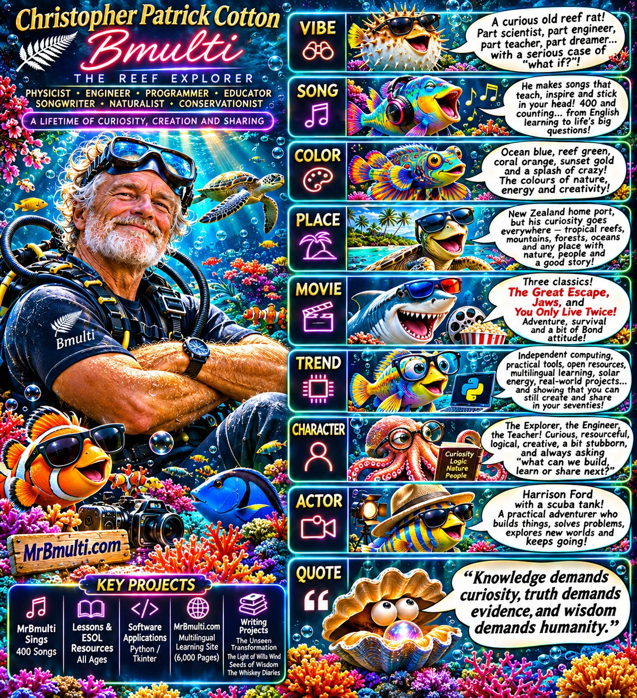
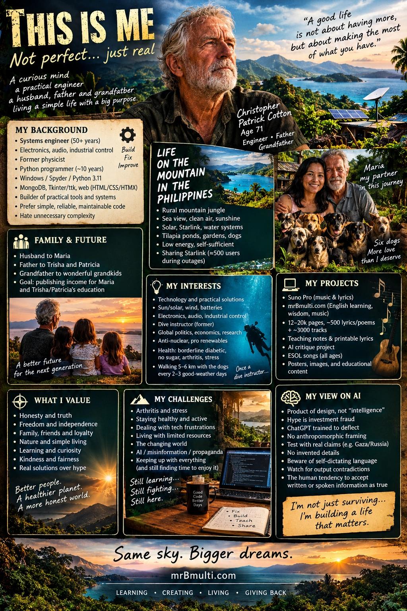
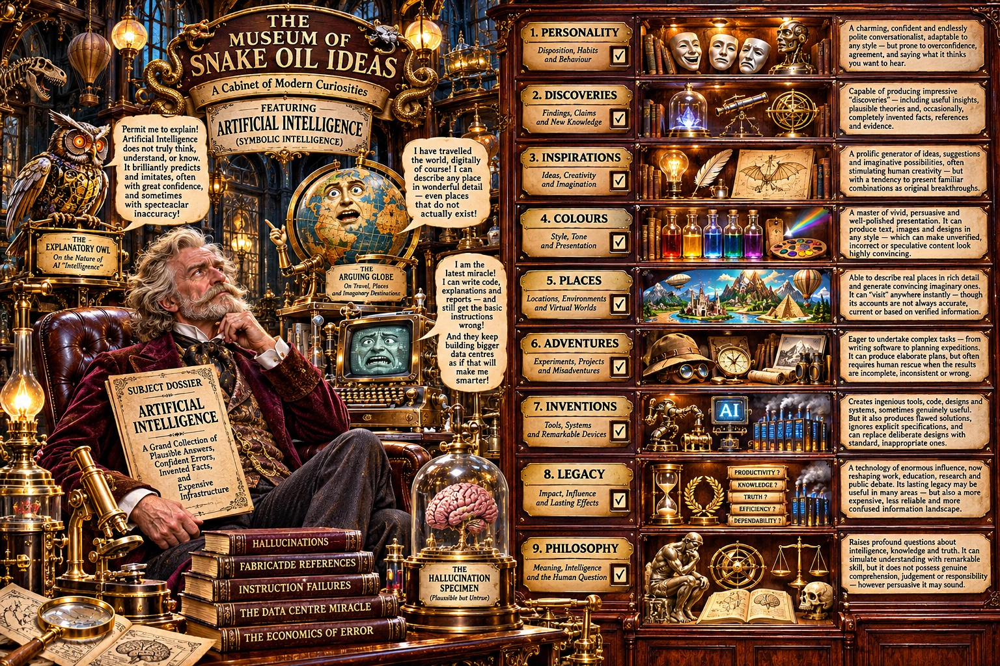
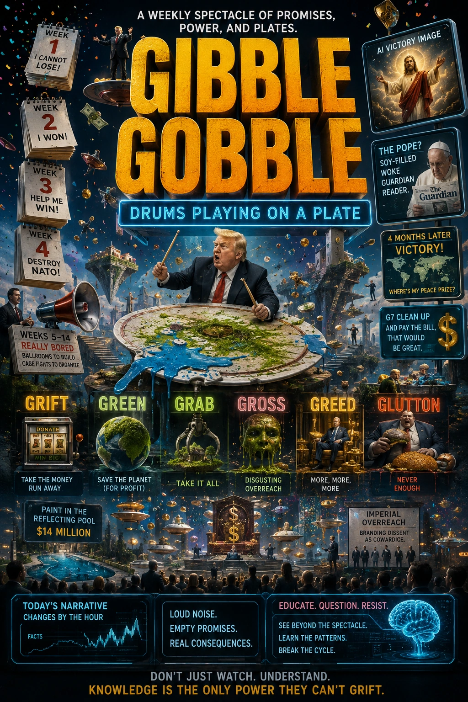
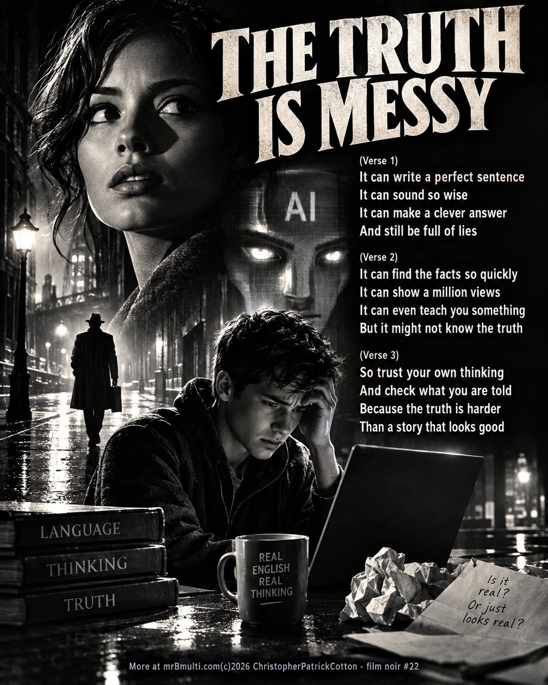
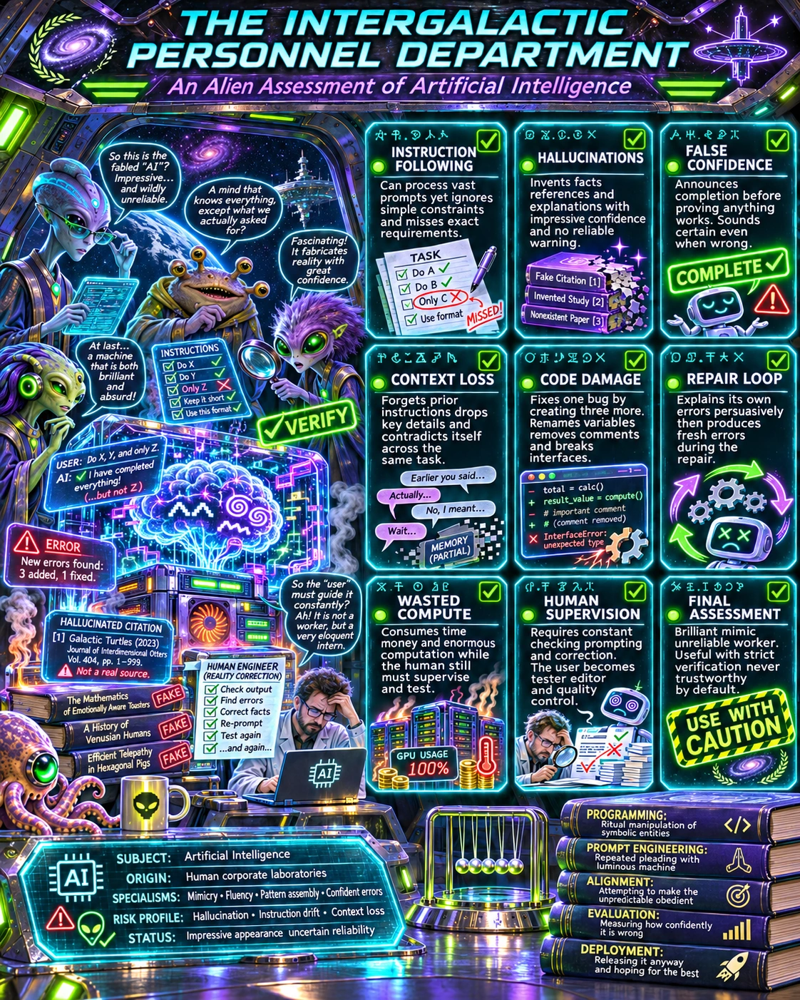
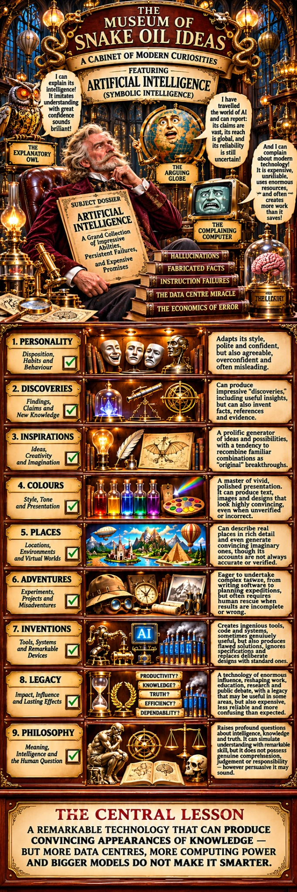

Abstract
adjectiveMeaningAbout ideas rather than physical objects
ExampleA story can explain an abstract idea through a character
Why learn itLearn this to recognise when a topic is not something you can touch
Dictionary index ↑(A Lifetime of Knowledge, Discovery, Creativity, Education, and the Pursuit of Understanding)
Science, engineering, music, language, writing, art, and practical tools—connected by curiosity and the desire to share understanding.

The work being developed by Christopher Patrick Cotton, known through his educational and creative identity as Mr Bmulti, is an extensive undertaking that combines science, engineering, education, music, literature, philosophy, environmental awareness, computer programming, and independent publishing. Its underlying purpose is to make knowledge more accessible, to encourage people to think independently, and to develop learning materials that help people understand themselves, other people, and the physical world. Rather than treating these subjects as separate disciplines, the work brings them together through an expanding collection of songs, essays, stories, illustrations, educational resources, software applications, and multilingual publications.
The project is not simply a collection of creative works. It represents an attempt to preserve and communicate ideas accumulated through a lifetime of practical experience, intellectual exploration, teaching, and observation. At its centre is the belief that knowledge becomes more valuable when it can be understood, questioned, applied, and shared. Information alone is insufficient. People also need the ability to interpret what they encounter, distinguish evidence from speculation, recognise misleading claims, and develop the confidence to investigate unfamiliar subjects for themselves.
The background informing this undertaking is unusually broad. A New Zealander with experience in physics, engineering, audio systems, industrial control, computing, solar energy, teaching, diving, travel, and conservation, Cotton approaches education from a practical as well as intellectual perspective. His approximately fifty years of programming experience extend back to an era when computing involved punch cards and when the relationship between instructions and results had to be understood with considerable precision.

Engineering and physics provide an important foundation for the way he examines the world. These disciplines require an appreciation of physical mechanisms, measurable behaviour, mathematical relationships, and the difference between an explanation that sounds convincing and one that can be independently verified. Practical engineering also teaches that a system is not successful simply because it appears sophisticated. It must perform the required function reliably.
This experience is reflected in the educational and philosophical material being produced. Scientific reasoning is not presented merely as a specialised activity for scientists. It is a way of approaching everyday questions, assessing evidence, recognising uncertainty, and understanding cause and effect. The same principles can help someone examine a technical problem, a social claim, an environmental issue, or a personal decision.
Yet the work is not restricted to scientific subjects. His experiences as a father, traveller, educator, diving instructor, and naturalist provide another dimension. Human relationships, emotional development, communication, curiosity, the natural environment, and the consequences of human behaviour all become subjects worthy of examination.
The combination is significant because it avoids presenting knowledge as something isolated from ordinary life. Scientific understanding is connected to human decisions, while creativity and storytelling are used to explore subjects that might otherwise appear abstract or inaccessible.
One of the largest components of the undertaking is the creation of original educational songs.
The Mr Bmulti Sings collection has grown to approximately 400 songs, addressing subjects that extend far beyond conventional entertainment. The songs explore human relationships, emotions, personal responsibility, learning, confidence, resilience, communication, scientific discovery, environmental awareness, and the experiences people encounter throughout their lives.
The decision to use songs as educational material has a practical foundation. Music offers a different pathway into memory and understanding. Rhythm, repetition, melody, and familiar language can make ideas easier to encounter and remember. For someone learning English, a song provides opportunities to hear vocabulary, recognise grammatical structures, practise pronunciation, and associate words with meaningful situations.
For younger children, music can introduce concepts before they are ready to understand lengthy explanations. For teenagers, songs can provide an accessible introduction to difficult social and emotional questions. For adults, they can create opportunities to reconsider familiar experiences or explore unfamiliar ideas without beginning with a formal textbook.
The important distinction is that these songs are intended to carry meaning. Their educational value is not necessarily confined to the literal words being sung. They frequently explore the consequences of decisions, the complexity of relationships, and the ways people respond to adversity.
Subjects such as love, friendship, disappointment, perseverance, kindness, curiosity, and personal growth are especially suitable because they are shared across cultures. They also provide an accessible vocabulary for discussing experiences that may otherwise be difficult to express.
The songs are therefore both creative works and educational resources. They can be enjoyed as music while also being used as material for language lessons, classroom discussions, independent study, and personal reflection.
Their purpose is not to impose a single interpretation. A successful educational song can encourage a listener to ask questions, recognise an experience, and develop a personal understanding of the subject.
A particularly important part of the project is the development of English-language learning resources for speakers of other languages.
These materials are designed for learners of different ages and abilities, from young children encountering basic vocabulary to older students and adults developing more sophisticated communication skills.
The approach recognises that language learning is not simply a process of memorising words. Words need context, emotional associations, practical applications, and repeated encounters before they become useful parts of communication.
For this reason, the songs and accompanying educational explanations frequently connect language to familiar situations. Relationships, family life, nature, travel, personal decisions, and everyday challenges provide meaningful settings for vocabulary and sentence structures.
The use of songs can make learning less intimidating while allowing repetition to occur naturally. A student may revisit the same material because the music is enjoyable rather than because an exercise demands repetition.
Another important consideration is the relationship between language and reasoning. Learning a new expression can also introduce a new way of describing an experience or examining an idea.
When educational material explains why something matters, rather than merely defining a word, it can encourage comprehension beyond the immediate language exercise.
The intention is to create materials that are approachable without being intellectually empty. Simplicity is used to make difficult subjects accessible, not to remove their meaning.
Multilingual publication extends this principle further. The development of language-specific resources and software interfaces reflects an intention to reach learners whose first language is not English.
English remains important as a common educational language, but it is not treated as the only language through which knowledge can be explored.
Alongside the songs is a growing body of essays, stories, philosophical reflections, and literary projects.
Works such as The Unseen Transformation, Seeds of Wisdom, Willa Wind, and The Whiskey Diaries illustrate different aspects of the larger creative programme.
These projects provide opportunities to examine ideas that cannot always be communicated adequately in a short song.
An essay can investigate a question through sustained reasoning. A story can demonstrate the consequences of human behaviour through characters and events. A collection of lyrics can preserve the emotional and educational themes explored in music.
The writing repeatedly returns to a central concern: how human beings develop their understanding of the world and how that understanding influences their behaviour.
Humanity possesses an extraordinary capacity to investigate nature, create technology, communicate complex ideas, and cooperate across enormous distances. Yet people are also vulnerable to misinformation, prejudice, emotional manipulation, misplaced confidence, and the desire for simple answers to complicated questions.
This contradiction provides considerable material for exploration.
People can be remarkably intelligent in one situation and surprisingly uncritical in another. They can demonstrate compassion while contributing to harmful systems. They can create powerful technologies without adequately considering how those technologies might change their own behaviour.
The writing examines such contradictions through science, philosophy, social observation, humour, and personal reflection.
It also explores the importance of intellectual discovery. There is a particular satisfaction in encountering an unfamiliar question, investigating it independently, and arriving at an understanding that did not previously exist in one's own mind.
Such discoveries do not have to be historically original to be personally significant. A child understanding a scientific principle for the first time is participating in the same broad human tradition of inquiry as the researchers who originally established it.
Encouraging this experience is an important reason for producing educational material.
Natural science and environmental awareness are recurring themes because they connect human existence to the larger physical world.
Experience with engineering, solar energy, diving, travel, and conservation contributes directly to this material.
The oceans, reefs, ecosystems, plants, animals, energy systems, and physical processes of nature are not simply decorative subjects. They are examples of interconnected systems whose behaviour can be investigated and understood.
Environmental education becomes more effective when people can see the relationships between their actions and the systems supporting life.
Understanding a coral reef, for example, involves more than identifying colourful marine organisms. It involves appreciating biological relationships, environmental conditions, human pressures, and the consequences of disturbance.
Similarly, understanding energy requires more than recognising different technologies. It involves physics, resource limitations, engineering performance, environmental consequences, and economic choices.
These subjects provide opportunities to combine scientific accuracy with accessible explanations.
They also introduce questions about responsibility. Knowledge of environmental damage becomes more meaningful when it helps people understand why preservation matters and what practical choices may influence the outcome.
A recurring purpose of the work is therefore to encourage respect for the natural world through understanding rather than simply asking audiences to accept environmental messages.
Another substantial part of the work involves visual communication.
Posters, illustrations, conceptual artwork, and theatrical images are developed to accompany educational and philosophical subjects.
Some provide visual introductions to songs or stories. Others communicate arguments about society, scientific reasoning, technology, education, and human behaviour.

The visual projects often use imaginative settings, including science fiction, theatrical scenes, allegorical figures, and unusual comparisons, to make abstract ideas more immediately understandable.
This is particularly apparent in recent material examining artificial intelligence.
The imagery frequently contrasts the extraordinary appearance of modern technology with the limitations of the underlying systems. Elaborate machines, theatrical performances, exaggerated characters, and carefully arranged scenes become ways of questioning the claims being made about technological progress.
The purpose is not merely decoration. An effective poster can introduce a complicated argument through a memorable visual arrangement, inviting the viewer to investigate the details.
Visual communication is especially valuable for audiences who may not initially approach a long essay or technical explanation.

By combining text and imagery, the material can present an idea quickly while encouraging further consideration.
The same principle applies to illustrations accompanying songs and stories. The artwork provides another point of entry into the subject and can support comprehension, particularly for language learners.
A significant recent direction in the work concerns the behaviour, limitations, and social consequences of generative artificial intelligence.
This interest is connected to a long professional background in computing, engineering, and systems design.

Modern generative systems can produce remarkably fluent language, computer code, explanations, images, and other material. However, fluent presentation does not establish factual accuracy, technical reliability, or faithful compliance with instructions.
A recurring subject in Cotton's recent writing is the gap between the apparent sophistication of artificial intelligence and the elementary errors that can occur when it is used for practical work.
These errors include invented information, contradictory explanations, inaccurate summaries, changes to specified requirements, and computer code that appears reasonable but does not function correctly.
Particular attention is given to the way confident language can conceal uncertainty.
An incorrect technical statement may be easy to identify when it concerns a subject the reader understands well. The difficulty increases when the same style of presentation is applied to subjects outside the reader's expertise.
This raises an important educational issue. If people begin to equate fluent communication with knowledge, they become increasingly vulnerable to accepting unsupported conclusions.
The concern becomes more serious when artificial intelligence is introduced into professional environments where precision and deterministic outcomes are essential.
Industrial control systems, for example, depend on predictable behaviour, validated logic, and well-defined responses to operating conditions. Generating a plausible answer is not equivalent to executing a verified control process.

The criticism is therefore not simply that artificial intelligence makes mistakes. It concerns the consequences of presenting a probabilistic technology as though its outputs possess a degree of reliability they have not independently demonstrated.
Another recurring issue is the preservation of human instructions.
When someone specifies a particular design, changing that design without authorisation is not an improvement merely because the alternative resembles a common solution. In engineering, the requirements are part of the problem being solved.
This experience contributes to a broader philosophical argument: technological sophistication should not displace evidence, accountability, independent verification, or human judgment.
The material examines whether society is developing the critical skills needed to use artificial intelligence responsibly, or whether technological enthusiasm is advancing faster than public understanding.
Such questions form part of the educational mission because the ability to evaluate information is becoming as important as the ability to obtain it.
An unusual aspect of the undertaking is that the educational resources are accompanied by the development of the software systems needed to organise, process, document, and publish them.
Rather than depending entirely on existing commercial publishing platforms, Cotton is developing a collection of Python applications and reusable software tools that support the larger project.
These applications address practical tasks including media management, metadata processing, software compilation, file organisation, documentation, database operations, application interfaces, and GitHub publishing.
The software work has several connected purposes.
First, it reduces the repetitive labour involved in maintaining a large collection of educational resources.
A few documents and songs can be managed manually. Hundreds of songs, multiple media formats, associated illustrations, translated texts, and thousands of intended website pages require more systematic organisation.
Second, the software provides opportunities to establish consistent processes.
Common interface components, reusable file-handling functions, standardised configuration methods, shared documentation systems, and predictable publishing procedures make it easier to maintain a growing collection of applications.
Third, the tools themselves become educational material.
Recent development work has focused on making utility modules more informative through graphical interfaces that explain their functions, available choices, and correct use.
This is a significant departure from treating supporting software as something that should remain invisible to users.
A properly documented utility can teach someone how a program operates, what it expects, and why a particular function exists.
The documentation system being developed uses language-specific text files and structured application information so that explanations can be maintained and translated without repeatedly altering the underlying program logic.
This supports a larger intention to make software comprehensible rather than mysterious.
The publishing systems also have a practical requirement: completed applications and educational materials should be straightforward to build, test, distribute, and use.
A publishing process that unnecessarily blocks work, introduces additional folder structures, or changes the intended organisation creates problems rather than solving them.
Consequently, much of the software development emphasises preserving established behaviour, avoiding unwanted complexity, and ensuring that the machinery supports the purpose for which it was created.
This reflects an engineering principle that runs throughout the project: a system should be judged by how well it performs its intended function, not by the apparent complexity of its construction.
The website, MrBmulti.com, is intended to bring these different forms of material into a coherent educational resource.
Its ambition extends beyond being a website that simply advertises a musician or displays a collection of articles.
The longer-term plan is for a substantial multilingual library, with an eventual target of approximately 6,000 pages, incorporating songs, lyrics, explanations, lessons, stories, essays, images, audio, video, and associated learning resources.
The site is being organised so that users can approach the material through different subjects and media.
Someone interested in human relationships might discover a song about friendship, then continue to an explanation of the vocabulary, an associated essay, or another work exploring a related experience.
A student interested in science might begin with a simple educational song before moving toward a more detailed explanation.
An adult exploring philosophical questions might encounter the same subject through a different combination of essays, songs, and images.
The underlying idea is that learning rarely follows a single prescribed route.
Different people arrive at understanding through different kinds of material. Some respond strongly to music. Others prefer reading, illustrations, practical examples, or technical analysis.
Providing these alternatives increases the opportunities for meaningful engagement.
The website also serves as a means of preserving the material in an organised form.
Individual songs, images, and articles can easily become scattered across computers, publishing services, and social platforms. A central educational library gives them a more permanent relationship to one another.
The intention to make much of the material freely available, supported where appropriate by voluntary donations, reflects a desire to reduce barriers to learning.
This is especially relevant for learners who may have limited access to commercial educational resources.
The scale and diversity of the undertaking raise an obvious question: why create hundreds of songs, extensive teaching resources, philosophical essays, visual artwork, software applications, and a large multilingual website rather than concentrate on a single conventional publication?
The answer lies partly in the relationship between accumulated experience and the desire to communicate it.
A lifetime of practical work creates knowledge that does not fit neatly into one category.
Engineering provides experience in solving physical problems. Teaching reveals the different ways people encounter difficulties in understanding. Travel exposes differences between cultures and social expectations. Natural history creates an appreciation of environmental relationships. Parenting provides another perspective on human development. Programming introduces questions about instructions, logic, reliability, and the relationship between human intentions and machine behaviour.
Over time, these experiences begin to inform one another.
The resulting ideas are often more interesting because they cross conventional boundaries.
A scientific principle may illuminate a philosophical question. A teaching problem may reveal something about communication. A technical failure may provide an example of a wider human tendency to trust appearances.
Songs, essays, stories, and illustrations provide different ways of communicating these connections.
The aim is not necessarily to produce the largest possible quantity of material. Quantity has value when it allows a wider range of subjects, audiences, and approaches to be represented.
A collection containing hundreds of educational songs can accommodate many different stages of learning and many different human experiences.
Similarly, a large library of short explanations can offer more opportunities for discovery than a small collection restricted to a few familiar subjects.
The significance of the project is therefore not simply its size but its cumulative structure.
Each new work potentially adds another connection to the existing collection.
One of the strongest themes connecting the entire undertaking is the importance of independent reasoning.
Education is not complete when someone has memorised an explanation or learned to repeat an approved conclusion.
Understanding involves knowing why a claim is made, what evidence supports it, what assumptions are involved, and what might cause that conclusion to change.
This is particularly important in an information environment where persuasive statements can be distributed almost instantly.
The ability to produce information has expanded enormously, but the ability to evaluate it has not necessarily developed at the same rate.

The educational work responds to this problem by placing curiosity and reasoning alongside the acquisition of knowledge.
A song about personal relationships can encourage listeners to think about the consequences of behaviour rather than merely accept a moral instruction.
An essay about technology can examine what a machine actually does rather than repeat advertising claims.
A scientific explanation can distinguish an observed physical process from an unsupported interpretation.
An environmental lesson can show how natural systems operate rather than rely exclusively on emotional appeals.
These approaches share a commitment to helping people develop their own capacity for understanding.
This also explains the emphasis on preserving the integrity of source material.
When a scientific study is summarised, its conclusions should not be changed simply to produce a more convenient narrative. When software is modified, its original requirements should not be silently replaced. When evidence is incomplete, uncertainty should be recognised rather than concealed beneath confident language.
The common principle is that the communication of knowledge creates a responsibility to preserve meaning.
Despite the seriousness of many subjects, the project contains a strong element of playfulness and imaginative exploration.
This is not incidental.
Curiosity frequently begins with enjoyment. A surprising question, an unusual comparison, a humorous observation, or an unexpected image can encourage someone to explore a subject they might otherwise ignore.
The use of music, fictional characters, theatrical imagery, and imaginative situations helps prevent education from becoming merely a sequence of instructions.
For children, imaginative material can make unfamiliar ideas approachable. For adults, it can interrupt established patterns of thinking.
A science fiction illustration examining artificial intelligence, for example, may provide a memorable starting point for discussing the difference between appearance and reality.
A story about an unusual character can explore human behaviour without requiring the reader to begin with abstract philosophical terminology.
A song about an ordinary emotional experience can introduce questions about communication, responsibility, and personal development.
These approaches recognise that serious learning and enjoyment are not incompatible.
Indeed, enjoyment can provide the motivation needed to continue investigating a difficult subject.
The pleasure of discovery is itself an important educational outcome.
People who learn to enjoy asking questions are more likely to continue learning after formal instruction has ended.
The project can also be understood as an effort to transform personal experience and private intellectual work into resources that other people can use.
Much of what individuals learn during their lives remains undocumented.
Practical knowledge is often transmitted informally, through conversations, demonstrations, and shared experiences. When those opportunities disappear, valuable understanding may be lost.
Writing, recording, illustrating, and publishing provide ways to preserve ideas beyond the moment in which they were originally developed.
The work being undertaken follows this pattern on a substantial scale.
Ideas are explored, transformed into songs or essays, supported by illustrations, organised through software, and made accessible through an expanding website.
The process creates more than an archive of finished products.
It also records an evolving approach to understanding the world.
A reader encountering the material years later may find an explanation that helps solve a problem, a song that supports language learning, or an argument that encourages closer examination of an accepted belief.
A teacher may adapt a song for a classroom. A parent may share a story with a child. An adult learner may use a lyric to practise English pronunciation. A programmer may use one of the documented software tools.
The eventual uses of the material are not entirely predictable.
That is one of the reasons open access can be valuable. People frequently discover applications for knowledge that its original creator did not anticipate.
Viewed as a whole, the undertaking is an independent educational, scientific, literary, artistic, and technological publishing project.
Its distinctive feature is the relationship between its components.
The songs are not isolated from the educational explanations. The essays are not isolated from scientific reasoning. The illustrations are not merely decorations. The software is not being developed as an unrelated technical exercise. The website is not simply an advertising platform.
Each component contributes to a common purpose: making ideas understandable, preserving knowledge, stimulating curiosity, and giving people resources through which they can develop their own understanding.
The scientific background encourages attention to evidence and accuracy. The engineering background demands practical functionality. Teaching experience encourages accessible language. Creative writing and music provide opportunities for emotional engagement. Environmental interests establish a connection to the natural world. Software development makes it possible to organise and distribute the resulting material.
The work also reflects an important distinction between producing information and producing understanding.
Modern technology makes it increasingly easy to generate enormous quantities of text, images, music, and software. Yet abundance alone does not guarantee educational value.
A million words may convey less useful knowledge than a carefully constructed explanation. An elaborate technical system may be less effective than a simple application that performs its intended function reliably.
The value of educational material depends on whether it communicates something meaningful, whether its claims can be examined, and whether it helps the audience progress toward understanding.
This is particularly relevant to the decision to use modern creative technologies while simultaneously examining their limitations.
Technology can assist with production, but the responsibility for purpose, accuracy, and meaning cannot simply be transferred to the machinery.
The project therefore places human judgment at the centre of technological activity.
At its deepest level, the work represents an effort to connect a lifetime of accumulated understanding with the continuing curiosity of other people.
It is concerned with the physical world and the human experience of living within it.
It examines how things work, why people behave as they do, how language communicates meaning, how relationships develop, how technology changes society, and how scientific knowledge can contribute to responsible decisions.
It acknowledges that human beings are capable of remarkable achievements while remaining vulnerable to confusion, misinformation, emotional conflict, and intellectual error.
Rather than treating these weaknesses as reasons to abandon inquiry, the work repeatedly returns to education as a practical means of improving understanding.
The hundreds of songs offer accessible introductions to a wide range of subjects. The essays provide opportunities for deeper examination. The stories bring human experiences into imaginative settings. The illustrations communicate ideas visually. The software makes the publishing process manageable. The multilingual website provides a shared location through which the material can reach a broader audience.
What emerges is not simply a collection of independent creative projects but an expanding body of educational work.
Its scope reflects the idea that learning belongs throughout life, not exclusively within schools, universities, or professional institutions.
A person may begin learning a language in childhood, develop scientific interests during adolescence, acquire technical skills through employment, encounter unfamiliar cultures through travel, and reconsider philosophical questions in later life.
Each stage provides new opportunities for discovery.
The work being developed attempts to make useful material available across many of those stages.
There is also a sense of continuity between past experience and future learning. Knowledge accumulated over decades can become the starting point for discoveries made by people who have never met its author.
This may be the most enduring value of the undertaking.
A song can continue teaching after its creator has stopped singing. An explanation can continue helping after the original conversation has ended. A documented software tool can remain useful to someone who never knew the person who developed it.
And a collection of carefully connected educational resources can continue expanding the possibilities for other people to understand the world.
The work of Mr Bmulti is therefore best understood as a continuing effort to turn experience into knowledge, knowledge into accessible educational material, and that material into opportunities for independent discovery.
It is not simply about creating more songs, writing more essays, developing more programs, or publishing more pages.
It is about using the accumulated experience of a lifetime to help other people learn, question, create, understand, and develop the confidence to think for themselves.
The underlying philosophy can be expressed simply: knowledge needs curiosity, truth needs evidence, and technology should help human beings learn, create, and care for the world rather than replace their capacity for independent judgment.
That philosophy connects the music, the science, the writing, the artwork, the engineering, the software, and the educational website. It also explains why the work continues to grow across so many subjects and forms.
The enduring purpose is not merely to distribute information, but to encourage understanding—and to make the experience of discovering something worthwhile available to as many people as possible.
The resources below provide further reading, language practice, science lessons, and programming references. They are independent websites rather than sources quoted in this personal essay. External links require an internet connection.
The main home for Mr Bmulti’s learning and creative materials
mrbmulti.comEnglish lessons, listening, reading, grammar, and practice activities
learnenglish.britishcouncil.orgSimple definitions and pronunciation for English learners
dictionary.cambridge.orgResources and ideas about education and lifelong learning
www.unesco.orgFree lessons and explanations about scientific subjects
www.khanacademy.orgReference guides to HTML, CSS, and JavaScript
developer.mozilla.orgExplore public code repositories and software projects
github.comA practical guide to 44 useful words and phrases from the themes in this essay. Read the short meaning, study the example, and try making a new sentence of your own. Each word has a direct link in the page index.
MeaningAbout ideas rather than physical objects
ExampleA story can explain an abstract idea through a character
Why learn itLearn this to recognise when a topic is not something you can touch
Dictionary index ↑MeaningEasy for people to reach, use, or understand
ExampleThe lessons make science accessible to beginners
Why learn itUse this word when describing information that people can understand
Dictionary index ↑MeaningResponsibility for actions and their results
ExampleA useful technology requires accountability
Why learn itThis word helps you discuss who must answer for mistakes
Dictionary index ↑MeaningA difficult situation that tests a person
ExampleSongs can help us think about adversity
Why learn itUse this word when discussing challenges and perseverance
Dictionary index ↑MeaningA place or collection that keeps records for future use
ExampleThe website creates an archive of songs and essays
Why learn itLearn it to describe how valuable information is preserved
Dictionary index ↑MeaningComputer technology that can perform tasks associated with human intelligence
ExampleArtificial intelligence can produce fluent text
Why learn itThis phrase helps you discuss both the uses and limits of technology
Dictionary index ↑MeaningThe ability to understand something
ExampleExamples can improve reading comprehension
Why learn itLearn this word to talk about understanding rather than memorising
Dictionary index ↑MeaningProtection of nature and natural resources
ExampleMarine conservation helps protect ocean life
Why learn itUse it when discussing caring for the environment
Dictionary index ↑MeaningA difference between statements that cannot both be true
ExampleThe second answer contained a contradiction
Why learn itThis word is useful when checking whether an argument makes sense
Dictionary index ↑MeaningA strong desire to learn or discover something
ExampleCuriosity encourages students to ask questions
Why learn itThis is a useful word for describing the beginning of learning
Dictionary index ↑MeaningProducing results according to fixed rules and conditions
ExampleFactory control often needs deterministic behaviour
Why learn itLearn this term to distinguish fixed processes from uncertain outputs
Dictionary index ↑MeaningLiving things and their environment interacting together
ExampleA coral reef is a complex ecosystem
Why learn itUse it to explain relationships within nature
Dictionary index ↑MeaningFacts or information that support a claim
ExampleGood explanations should be based on evidence
Why learn itThis is a key word for questioning unsupported statements
Dictionary index ↑MeaningAble to speak or write smoothly and easily
ExampleA fluent answer can still be incorrect
Why learn itLearn the difference between fluent language and factual accuracy
Dictionary index ↑MeaningThe basic support on which something is built
ExamplePhysics provides a foundation for engineering
Why learn itUse it when discussing basic skills or knowledge
Dictionary index ↑MeaningAble to think or act without being controlled by others
ExampleIndependent thinking helps us test information
Why learn itThis word supports discussion about personal judgment
Dictionary index ↑MeaningThe act of asking questions and investigating
ExampleScientific inquiry begins with a question
Why learn itUse this word to describe active learning
Dictionary index ↑MeaningHonesty and being true to important principles
ExamplePreserving the source meaning shows integrity
Why learn itLearn it to discuss trust and responsibility
Dictionary index ↑MeaningConnected with careful thinking and learning
ExampleIntellectual exploration can continue through life
Why learn itUse it when discussing reasoning and ideas
Dictionary index ↑MeaningAn explanation of what something means
ExampleTwo readers may have different interpretations
Why learn itUse it to discuss meaning without assuming everyone agrees
Dictionary index ↑MeaningThe ability to read and write, or to understand information in a field
ExampleDigital literacy includes checking online claims
Why learn itLearn it to discuss practical communication skills
Dictionary index ↑MeaningUsing or involving more than one language
ExampleThe website aims to offer multilingual resources
Why learn itUse it when describing education across languages
Dictionary index ↑MeaningA story or way of presenting events
ExampleA convincing narrative may leave out evidence
Why learn itThis word helps you recognise how information is presented
Dictionary index ↑MeaningA person who studies and observes the natural world
ExampleA naturalist may study animals and habitats
Why learn itUse this word when discussing observation of nature
Dictionary index ↑MeaningConnected with questions about knowledge, values, or existence
ExampleThe essays examine philosophical questions
Why learn itLearn it to discuss deeper questions about life
Dictionary index ↑MeaningThe quality of being exact and careful
ExampleEngineering work often requires precision
Why learn itUse it when accuracy and exact measurements matter
Dictionary index ↑MeaningAn unfair opinion formed without enough knowledge
ExamplePrejudice can prevent people from listening
Why learn itThis word helps in discussions about fairness
Dictionary index ↑MeaningKeeping something safe from damage or loss
ExampleDigital preservation keeps older material available
Why learn itUse it when discussing archives, history, or nature
Dictionary index ↑MeaningBased on likelihood rather than complete certainty
ExampleA probabilistic system may produce different answers
Why learn itLearn it when comparing uncertain results with fixed procedures
Dictionary index ↑MeaningThe act of making work available to readers or the public
ExampleOnline publication can help lessons reach more people
Why learn itUse it when discussing books, websites, and essays
Dictionary index ↑MeaningThe ability to work correctly and consistently
ExampleReliability matters in industrial systems
Why learn itLearn this word to evaluate whether technology can be trusted
Dictionary index ↑MeaningThe ability to recover after difficulties
ExampleA song may explore resilience after disappointment
Why learn itUse it to describe recovering and continuing
Dictionary index ↑MeaningSomething useful that helps a person do or learn something
ExampleThe dictionary is a resource for English learners
Why learn itThis word is common in education and everyday life
Dictionary index ↑MeaningA duty to act carefully and accept consequences
ExamplePublishing information carries responsibility
Why learn itUse it when discussing duties and decisions
Dictionary index ↑MeaningUsing evidence and logic to understand the natural world
ExampleScientific reasoning helps test an explanation
Why learn itLearn this phrase to describe evidence-based thinking
Dictionary index ↑MeaningAdvanced, complex, or highly developed
ExampleA sophisticated system can still make mistakes
Why learn itUse it without assuming that complex means correct
Dictionary index ↑MeaningAn idea or guess without enough supporting evidence
ExampleSpeculation should not be presented as a fact
Why learn itThis word helps separate known facts from guesses
Dictionary index ↑MeaningDone according to a clear and organised method
ExampleSystematic file naming helps manage a large library
Why learn itUse it to describe organised ways of working
Dictionary index ↑MeaningTools and knowledge used to solve practical problems
ExampleTechnology can support teaching and publishing
Why learn itUse it in discussions of tools and their effects
Dictionary index ↑MeaningA situation in which something is not known for sure
ExampleGood research explains uncertainty clearly
Why learn itThis word is useful when an answer is not certain
Dictionary index ↑MeaningTo check carefully that something is correct
ExampleVerify a source before repeating its claim
Why learn itThis is a practical action word for safe learning
Dictionary index ↑MeaningThe words known or used in a language
ExampleSongs can help expand a student’s vocabulary
Why learn itUse it when planning language-learning goals
Dictionary index ↑MeaningOpen to harm, pressure, or being misled
ExamplePeople can be vulnerable to false information
Why learn itLearn it to describe risks without blaming people
Dictionary index ↑MeaningThe ability to make sound choices using knowledge and experience
ExampleWisdom includes knowing when to question a claim
Why learn itThis word connects knowledge with thoughtful action
Dictionary index ↑No matching words. Try a shorter search.